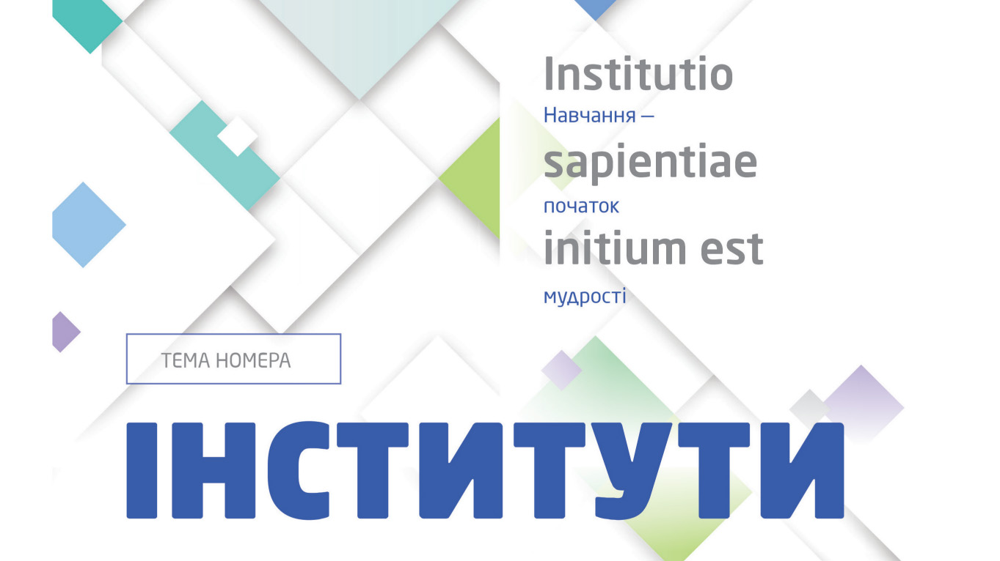

Звіт ректора про основні досягнення Львівської політехніки у 2025 році на Конференції трудового колективу Університету
Політехніка екскурсійна

Інститути – досягнення, плани, мотивація: тематичний номер журналу «Львівська політехніка»
Львівська політехніка у рейтингах закладів вищої освіти
Новини університету
27 лют. 2025, 17:17
XI Міжнародний молодіжний конгрес «Сталий розвиток: захист навколишнього середовища…»
27 лют. 2026, 16:22
Великдень у Політехніці: Музей історії Університету запрошує долучитися до наповнення експозиції
27 лют. 2026, 15:32
У Львівській політехніці відбулася зустріч з генеральним директором Конструкторського бюро «Південне» Дмитром Грищаком
27 лют. 2026, 14:57
Ректорка Університету зустрілася з делегацією Національного інституту польської культурної спадщини за кордоном «Полоніка»
27 лют. 2026, 12:06
Відкрита зустріч з експертами освітньо-наукової програми «Історія та археологія» (аспірантура)
27 лют. 2026, 10:51
У Львівській політехніці відбувся захист проєктів учасників «Школи лідерства»
27 лют. 2026, 10:06
Львівська політехніка оголошує конкурс на заміщення вакантних посад директорів коледжів
27 лют. 2026, 09:06
Михайло Шевелюк — про відкриття свого закладу без ілюзій і фатальних помилок
26 лют. 2026, 17:22
Катедра української мови запрошує учнів 9–11 класів до участи у Весняній школі «Тренінг-курси з української мови (НМТ–2026)»
26 лют. 2026, 15:23
Урядовці, дипломати й бізнесмени з Австрії були гостями Львівської політехніки
26 лют. 2026, 14:51
Студентська організація BEST Lviv провела у Львівській політехніці Local Event on Education
26 лют. 2026, 12:15
Як енергетика стала питанням національної безпеки. Професор Андрій Лозинський про енергетичний Рамштайн